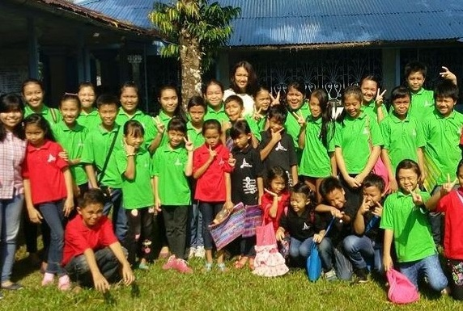

Serukam Youth Health Project
Serukam, West Borneo, Indonesia

I had the chance to experience live-in program at one of the rural areas
in West Borneo, Indonesia. It took 5 hours from the capital city,
Pontianak to the Serukam, the place where I stayed for one week. I
educated the local children about hygiene and healthy diet.
We also created several competitions to increase their interest in
healthy lifestyle. I also observed the hospital system and introduced to
the hospital service and programs. At the end of the program, we made
hand craft together as the souvenir for the local kids, also as an
environmental campaign.
Community and Family Heath Care Education Program
Yogyakarta, Indonesia
We have an initiation program from the campus to involve in the
community health. This program started from our second to fourth year of
medical school. We were assigned to observe a subvillage and divide it
into several teams to monitor 2-3 households.
We then proposed several programs to improve health and prevent
non-communicable disease in the community. Together with fellow nursing
and nutritional science student I led the health education campaign and
did home visits routinely to monitor health conditions of each family
member of that household.
At the end of the preclinical year, we were involved in disaster
management and emergency training, involving the local villagers, also
the Regional Board for Disaster Management to educate the villagers
about basic disaster management and planning, as this village is located
near the active volcanic mount, Mount Merapi. We also had a disaster
simulation in that area. This program then transferred to our juniors to
maintain the continuous health prevention program in the community.